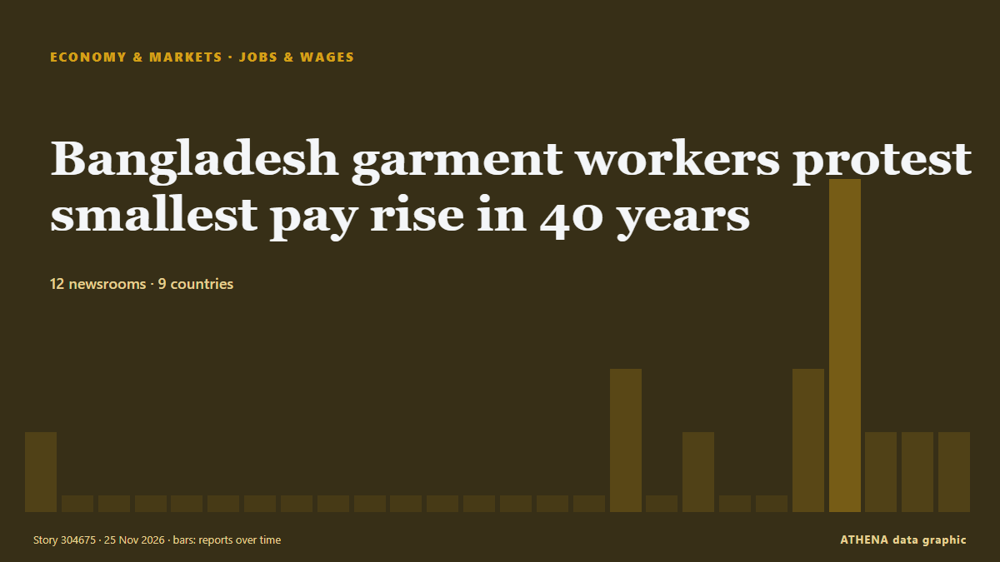

Economics, Finance & Markets
SponsoredPresented by  Cybernetics and Artificial Intelligence Lab Welcome to the Cybernetics and Artificial Intelligence Laboratory, established at the Department of Business Administration of the National and Kapodistrian University of Athens. The lab is headed by Professor Dimitrios Thomakos. The lab aims to do research that can be published in top venues. Our research uses tools and methods of Artificial Intelligence, and lies in the following areas: - Forecasting - Decision making - Cyber security - Finance We are always looking forward to collaborating with exceptional students!
Cybernetics and Artificial Intelligence Lab Welcome to the Cybernetics and Artificial Intelligence Laboratory, established at the Department of Business Administration of the National and Kapodistrian University of Athens. The lab is headed by Professor Dimitrios Thomakos. The lab aims to do research that can be published in top venues. Our research uses tools and methods of Artificial Intelligence, and lies in the following areas: - Forecasting - Decision making - Cyber security - Finance We are always looking forward to collaborating with exceptional students!
Market monitor - official figures
Which way official market measures are moving - up, down or flat - with the latest official figure and its date, and the market news ATHENA verified alongside. Official figures, not live prices.
Energy
| 1 day | 1 week | 1 month | Official figure | |
|---|---|---|---|---|
| Brent crude | ▲ | ▼ | ▼ | $91.80/bblOfficial data of 24 Nov 2026 |
| WTI crude | ▲ | ▼ | ▼ | $82.24/bblOfficial data of 24 Nov 2026 |
| US natural gas (Henry Hub) | ▲ | ▲ | ▲ | $3.30/MMBtuOfficial data of 24 Nov 2026 |
| European natural gas (1 month · 3 months · 12 months)(1M · 3M · 12M) | ▲ | ▲ | ▲ | $25.49/MMBtuOfficial data of 1 Sep 2026 |
| Coal (Australia) (1 month · 3 months · 12 months)(1M · 3M · 12M) | ▲ | ▲ | ▲ | $153.84/tOfficial data of 1 Sep 2026 |
Food
| 1 month | 3 months | 12 months | Official figure | |
|---|---|---|---|---|
| Wheat | ▲ | ▲ | ▲ | $246.85/tOfficial data of 1 Sep 2026 |
US stock markets
| 1 day | 1 week | 1 month | Official figure | |
|---|---|---|---|---|
| S&P 500 | ▼ | ▼ | ▼ | Direction only (index © Cboe)Official data of 24 Nov 2026 |
| Nasdaq Composite | ▼ | ▼ | ▼ | Direction only (index © Cboe)Official data of 24 Nov 2026 |
Rates, risk and the dollar
| 1 day | 1 week | 1 month | Official figure | |
|---|---|---|---|---|
| US 10-year Treasury yield | ▬ | ▼ | ▼ | 4.92 %Official data of 23 Nov 2026 |
| Market volatility (VIX) | ▼ | ▲ | ▲ | Direction only (index © Cboe)Official data of 24 Nov 2026 |
| US dollar, broad index | ▬ | ▲ | ▲ | 123.60Official data of 20 Nov 2026 |
The euro against other currencies
| 1 day | 1 week | 1 month | Official figure | |
|---|---|---|---|---|
| EUR/USD | ▼ | ▼ | ▼ | 1.0935 USDOfficial data of 25 Nov 2026 |
| EUR/GBP | ▬ | ▲ | ▬ | 0.8373 GBPOfficial data of 25 Nov 2026 |
| EUR/CHF | ▼ | ▼ | ▼ | Unusual move 0.9085 CHFOfficial data of 25 Nov 2026 |
| EUR/JPY | ▼ | ▼ | ▼ | 174.22 JPYOfficial data of 25 Nov 2026 |
| EUR/CNY | ▬ | ▼ | ▼ | 7.2999 CNYOfficial data of 25 Nov 2026 |
| EUR/TRY | ▼ | ▲ | ▼ | 55.416 TRYOfficial data of 25 Nov 2026 |
| EUR/NOK | ▲ | ▲ | ▲ | 10.7778 NOKOfficial data of 25 Nov 2026 |
Sources: US Energy Information Administration (oil, US gas), IMF (European gas, coal, wheat), US Treasury and Federal Reserve (10-year yield, dollar index) Cboe (VIX), S&P Dow Jones Indices (S&P 500) and Nasdaq (Nasdaq Composite), via FRED (Federal Reserve Bank of St. Louis); euro reference rates © European Central Bank. Figures are the latest official values with their date - not live prices. Directions are computed by ATHENA.
Crypto, ETFs and shares in the news
- Global stocks rally as Nvidia rebound lifts Asian markets Risk 3.1 25 Nov
- Nasdaq sinks about 4% as AI rout, fresh Trump tariffs spook Wall St Risk 3.2 25 Nov
- Ukraine’s parliament passes law to legalize cryptocurrency Risk 0.0 25 Nov
- PIF secures inaugural S&P ‘A+’ credit rating with stable outlook Risk 0.0 25 Nov
- Trump shares Democratic senator-elect's 'TrumpCare' proposal on Truth Social Risk 0.0 25 Nov
- Rupee rises to 7-month high of 92.42 per US dollar on strong equity inflows Risk 1.1 25 Nov
- European Commission Proposes Quantum Act and New Sovereign Tech Equity Fund Risk 0.0 25 Nov
- Tata Steel shares rise 1%, APL Apollo falls 9% as brokerages turn cautious on ₹28,000 cr deal Risk 1.1 25 Nov
- Sensex today | Stock Market Highlights: Sensex surges 1,502 points, Nifty reclaims 25,800 as rupee hits eight-month high Risk 1.5 25 Nov
- Possible Tesla merger could aid SpaceX’s S&P 500 entry, J.P. Morgan says Risk 0.0 25 Nov

Jobs & wagesBangladesh garment workers protest smallest pay rise in 40 years
Bangladesh approved a 36% minimum wage hike for garment workers on Wednesday, its smallest in four decades, despite weeks of protests and calls for it to be doubled, prompting fresh clashes between… from Cyprus Mail
| 13 Nov | 72 |
|---|---|
| 14 Nov | 39 |
| 15 Nov | 64 |
| 16 Nov | 129 |
| 17 Nov | 101 |
| 18 Nov | 105 |
| 19 Nov | 109 |
| 20 Nov | 79 |
| 21 Nov | 38 |
| 22 Nov | 46 |
| 23 Nov | 115 |
| 24 Nov | 79 |
| 25 Nov | 48 |
| 26 Nov | 0 |
Will weather ground Macy’s Thanksgiving Parade balloons? Official floats start time change
The Macy’s Thanksgiving Day Parade in New York City is once again facing its eternal foe: wind. from The Independent
Ukraine’s parliament passes law to legalize cryptocurrency
Ukrainian parliament, the Verkhovna Rada, has passed legislation legalizing the cryptocurrency market and establishing a tax framework for virtual asset transactions. from Ukrinform (English)
PIF secures inaugural S&P ‘A+’ credit rating with stable outlook
RIYADH: Saudi Arabia’s Public Investment Fund has received its first long-term credit rating from S&P Global Ratings, securing an “A+” assessment with a stable outlook, marking another milestone in… from Arab News
Treasury's FinCEN takes systems offline after cybersecurity incident
The Treasury Department has taken some systems offline after a cybersecurity incident that “resulted in unauthorized access to a limited subset of its systems.” from The Record (Recorded Future News)
Malaysia set to hold rates on strong growth, signal hike in 2027
Inflation in Malaysia remain moderate, despite a surge in global oil prices. from The Business Times
New Israeli army gates risk isolating 70,000 Palestinians in occupied West Bank
Five iron gates installed along a key road west of Hebron could restrict movement between villages and the city, disrupt access to farmland and deepen the isolation of Palestinian communities, local… from TRT World
Sensex today | Stock Market Highlights: Sensex surges 1,502 points, Nifty reclaims 25,800 as rupee hits eight-month high
Sensex, Nifty, Share Prices Highlights: Benchmark indices rallied nearly 2 per cent on Wednesday as heavyweight buying, strong foreign inflows and easing crude oil prices lifted sentiment, while the… from The Hindu BusinessLine
Seven Israeli teenagers arrested during West Bank outpost raid in closed military zone
According to suspicions, the teenagers were not only staying at the site in violation of the order but were also involved in incidents of extremist violence and public disturbances. from The Jerusalem Post
Compass exit should spur London to beef up its bench
Financial hubs are like football teams, and it’s time for London market to focus on the next generation. from Financial Times - Markets
Google Cloud says about 30 roles eliminated in India, calls lay-off rumours 'totally inaccurate'
Approximately 30 roles were eliminated as part of a re-prioritisation of work, Google Cloud said. from The Hindu BusinessLine
Nikkei drops nearly 3% amid AI concerns despite Nvidia CEO's return
The Nikkei stock index fell back sharply on Wednesday with investors locking in gains on technology issues that rebounded strongly th. from Mainichi (English)
Behind Binance Hack, a Reckoning Over Who Controls Crypto
As North Korean cyberthieves were funneling billions out of Binance last month, the world’s largest crypto exchange looked to two other companies to help stop the bleeding: Tether and Circle. from Insurance Journal
Foxconn India unit reportedly faces insolvency petition over unpaid dormitory rent
A local landlord has taken Foxconn's Indian unit to insolvency court over unpaid rent for worker housing at its Bengaluru iPhone plant, adding a supplier-payment dispute to the operational strains… from DigiTimes Asia
Oil prices exceed $92 on global commodity markets
Retail fuel prices in Cambodia fell again yesterday following a decline in international oil markets, according to the Ministry of Commerce. from Khmer Times
Thailand’s Loy Krathong Festival lights up Chiang Mai
Thousands of Thai residents and international visitors gathered along the banks of the Ping River in northern Thailand’s Chiang Mai on Tuesday to celebrate Loy Krathong, the country’s traditional… from DVB English
Anthropic falls below $83 IPO price in swift reversal after record listing
The stock was last down 6.5% at US$82, extending its retreat from a blockbuster Nov 19 debut. from The Business Times
We skipped our usual Thanksgiving dinner for a family getaway. My kids didn't miss a thing.
I was tired of cooking Thanksgiving dinner, so my family took a trip to Key West instead. from Business Insider
Charlie Cox, 43, says he was rejected for James Bond as 'too old' before Robert Pattinson, 40, was cast
Daredevil actor Charlie Cox has said he was turned down for the role of James Bond because he was "too old," days after Robert Pattinson, 40, was announced as the next 007. from Gulf News
South African rand gains as commodity prices rise and dollar weakens
The South African rand strengthened on Monday, supported by firmer commodity prices and a weaker US dollar, which came under pressure after a Federal Reserve Governor said that the central bank’s… from Club of Mozambique
Merger of Dubai’s top Islamic banks comes a step closer
Dubai Islamic Bank may be about to make a bid for Emirates Islamic Bank, the sharia-compliant subsidiary of Emirates NBD. from AGBI
As Guru Nanak Prakash Purab is celebrated tomorrow, a curious question about dates
Prime Minister Narendra Modi participated in a Shabad Kirtan at Delhi Raj Niwas on the eve of Guru Nanak Dev's birth anniversary. from Times of India
Iranian rial hits record low after fresh US sanctions target financial network
The Iranian rial fell to a record low against the US dollar on Tuesday, a day after Washington announced fresh sanctions targeting the financial networks Iran uses to access foreign currency, Anadolu… from Middle East Monitor
Netanyahu Welcomes Reported Reinstatement of Nvidia Founder Jensen Huang as CEO
Israeli caretaker Prime Minister Benjamin Netanyahu welcomed Nvidia’s reported decision Monday to reinstate its founder, Jensen Huang, as chief executive officer, despite ongoing investigations into… from Middle East Monitor
Sri Lanka sees sharp surge in vegetable prices, impacting vendors and consumers
Final mile delivery prices climb 10.5% in Q3, GEODIS says
Courier and local freight prices rose 10.2% and 10.7% in the third quarter, according to a new GEODIS index, against a 3.5% rise in consumer prices over the same period. from FreightWaves
OPEC Fund to provide Sri Lanka with $30 million loan for reforms
Sri Lanka is set to receive a US$30 million policy-based loan from the OPEC Fund for International Development to support its economic reforms and recovery programme. from Daily Mirror
Trump: Illegal for Deutsche Bank to leak tax records
United States President Donald Trump told reporters on Tuesday that it was "illegal" for Deutsche Bank to leak his tax records, shortly after the institution distanced itself from the 2017 breach. from AzerNews
US lawmaker calls situation in West Bank ‘horrific'
Joaquin Castro sponsors Stop the Settlements Act to hold settlers, companies financially accountable for supporting settlement activity in West Bank, Gaza. from Anadolu Agency (English)
10 best gifts for foodies
Score a great gift for everyone on your list without breaking the bank. from Wired
Anthropic CEO Dario Amodei Sold $280 Million In Shares As Part Of Record IPO
The billionaire Anthropic CEO’s sister and fellow co-founder, Daniela Amodei, also disclosed an identical stock sale in a regulatory filing on Monday. from Forbes Business
NBC strengthen commitment to finance mining sector, empower small-scale miners
DAR ES SALAAM: The National Bank of Commerce (NBC) has committed to expanding financial support across Tanzania’s mining sector, with particular emphasis on improving small-scale miners’ access to… from Daily News
Rats will keep away from sheds in winter if UK households carry out three key tasks in November
Garden sheds can be the perfect winter hideaway for rats, but three expert-recommended steps could help prevent these unwanted pests from nesting before the colder weather sets in. from Manchester Evening News
Two bank executives and company nominee jailed over fake tax refund scheme
Bank branch manager in eastern Attica denies wrongdoing in testimony – Nine other suspects, including accountants alleged to have played a central role in the operation, are expected to give evidence… from ProtoThema English